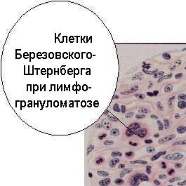

Лимфогранулёматоз.
Лимфогранулёматоз (ЛГМ) - злокачественный неопластический гемобластоз, исходящий из клона особых атипических клеток Березовского-Штернберга-Рида (КБШР), которые расселяются по лимфоузлам и внутренним органам, выделяя цитокины, и провоцируя вокруг себя формирование гранулём из нормальных лейкоцитов и макрофагов, как правило - с исходом в склероз. Природа КБШР, скорее всего - В-лимфоидная, хотя имеются свидетельства наличия у них миелоидных маркеров, сближающих эти элементы с макрофагоподобными интердигитирующими ретикулярными антигенпредставляющими клетками лимфоузлов.ЛГМ - заболевание подростков и молодых взрослых, в 80% ранних случаев - мужского пола. До 15 % пациентов в педиатрической онкологии - больные именно ЛГМ. Второй пик заболеваемости ЛГМ относится к возрастной группе после 50 лет, где преобладание мужчин менее значительно. Частота ЛГМ - от 1 до 3 случаев на 100 000 населения, наивысшая в Северной Америке и Западной Европе и самая малая - в Азии. В Японии ранний пик ЛГМ отсутствует.
ЛГМ - болезнь, поражающая, чаще всего, пациентов из городских семей с высоким социально-экономическим статусом, первых или единственных детей в семье. Отмечено повышение риска ЛГМ при аутоиммунной патологии, иммунодефицитах, после тонзиллэктомии, у лиц, не посещавших в раннем детстве детские учреждения, при носительстве некоторых антигенов ГКГС. Создается впечатление, что болезнь может вызывать онкогенный вирус, причем его потенциал реализуется тем вероятнее, чем позже происходит заражение и при наличии определённых особенностей иммунореактивности.

Не обнаружено связи ЛГМ и облучения, либо химического канцерогенеза. Более того, именно лучевая терапия была предложена Питерс, доказавшей излечимость ЛГМ, в качестве средства курации того заболевания, а внедрение химиотерапии сделало потенциально излечимыми даже глубокие стадии ЛГМ.
ЛГМ описал впервые в 1832 г. Ходжкин, указав на материале семи случаев на характерные для заболевания лихорадку, спленомегалию и увеличение лимфоузлов. Кутырев в 1875 году описал гистологическую картину поражения лимфоузлов при ЛГМ, а другой наш соотечественник Березовский (1890) постулировал, вопреки господствовавшей гипотезе о туберкулёзном происхождении ЛГМ, опухолевый характер болезни и открыл в гранулёмах при ЛГМ особые гигантские клетки. В 1898 г. данные Березовского подтвердил Штернберг. В дальнейшем, морфологию клеток Березовского-Штернберга детально изучил Рид (1902). Так образовался сложный русско-евро-американский эпоним. КБШР - крупные клетки с двудольным ядром и краевым расположением тонких петель хроматина, отличающиеся центральным просветлением в ядрах, крупные нуклеолы которых напоминают глазкообразные включения. В гранулёмах встречаются сходные с КБШР одноядерные клетки Ходжкина, возможно, являющиеся предшественницами КБШР, подвергающимися в дальнейшем делению ядра. В КБШР и клетках Ходжкина не найдено каких-либо характерных хромосомных аномалий. КБШР имеют малую, а клетки Ходжкина - высокую пролиферативную активность.
КБШР прежде считались исключительным признаком ЛГМ, но сейчас известно, что изредка единичные подобные клетки обнаруживаются при не-ходжкинских лимфомах и даже при инфекционном мононуклеозе. КБШР не имеют ни типичного набора В-клеточных, ни полного пакета Т-клеточных антигенов. В них имеются поликлональные иммуноглобулины,, очевидно, захваченные, а не синтезированные самими клетками. На КБШР представлены CD25 - маркер (рецептор ИЛ-2) и CD71 (рецептор трансферрина), характерные для различных линий лимфоцитов, и, в то же время, у них есть антигены ГКГС II класса - как у антиген-представляющих клеток, а также типичный миелоидный маркер - CD13. При лимфоцитарной форме ЛГМ на КБШР экспрессирован антиген CD45R -принадлежность дендритных клеток. В иммуноморфологической диагностике ЛГМ используется факт наличия у КБШР уникального сочетания маркеров CD15 и CD30. Первый антиген - рецептор молекул клеточной адгезии селектинов (см. т. 1, с. ), он же группоспецифический олигосахарид Lewis X, отсутствует на КБШР только при лимфоцитарной форме ЛГМ; присутствуя при всех остальных. Он может выполнять лигандные функции, аналогичные адресинам лимфоузлов и привлекать в гранулёмы при ЛГМ лимфоциты. Второй маркер известен как антиген Ki-1 активированных Т- и В-клеток, дендритных клеток и В-клеток, зараженных вирусом Эпштейна-Барр. (Фридмен, Нэдлер; 1994). Ещё один маркер КБШР - антиген BLA 36.
ЛГМ клинически и по способам эфективного лечения отличается от неходжкинских лимфом. Всё это не позволяет однозначно трактовать его, как лимфому. Тем не менее, в КБШР у различных больных имеется реаранжировка генов Т-клеточного рецептора и генов иммуноглобулинов, а в большинстве аблюдений обнаружен геном вируса Эпштейна-Барр, который заражает лишь В-лимфоциты.
КБШР в гранулёмах окружены зрелыми Т-лимфоцитами и менее многочисленными незлокачественными В-клетками. Гранулёма - источник хемокинов, привлекающих другие клеточные элементы. При различных подтипах болезни в гранулёмах могут встречаться реактивные элементы: нейтрофилы, эозинофилы, плазматические клетки, пролиферирующие гистиоциты и фибробласты. Для чисто лимфо-гистиоцитарных гранулём некроз не характерен, но его очаги могут присутствовать в гранулёмах при смешанно-клеточном составе.
Так как среди цитокинов, выделяемых клетками гранулёмы, имеются факторы роста фибробластов и то или иное количество ингибиторов коллагеназ, в гранулёмах могут развиваться очаги нодулярного склероза
Болезнь начинается с поражения одной или двух групп смежных лимфоузлов по одну сторону от диафрагмы (1-я или локальная стадия по классификации Энн-Эрбор, 1971 г.). Чаще всего, это надключичные или иные поверхностные шейные лимфоузлы (70%), либо лимфоузлы средостения, причем, как правило - срединно-осевой локализации (60%). Лимфаденопатия характеризуется увеличением, подвижностью и безболезненностью узлов, что затрудняет ранний диагноз. Только у части пациентов лимфоузлы начинают болеть… после приёма алкоголя. При медиастинальной локализации болезнь может быть случайно выявлена при рутинном рентгеновском обследовании.
Клетки гранулём при ЛГМ у 25-30% пациентов выделяют достаточно цитокинов, чтобы обеспечить системное действие этих биорегуляторов. Результатом системного действия цитокинов при ЛГМ служит развернутое проявление паранеопластического синдрома - так называемые Б-симптомы (термин не означает, что цитокины вырабатываются, обязательно, В-клетками, а связан с классификацией ЛГМ, в которой системные явления каждой из 4 стадий болезни обозначаются, как типичные для подстадии Б, в противоположность маломанифестной подстадии А и подстадии с экстранодальным вовлечением - E). Б-симптомы включают асептическую возвратную лихорадку Эпштейна -Пёля или, по крайней мере, необъяснимое повышение температуры, а также ночные поты, иногда - профузные, которые могут быть единственным проявлением заболевания. У значительной части пациентов (более 10%) отмечается генерализованный кожный зуд, иногда - с папулёзной сыпью и/или эритемой, крапивница. Изредка - это единственный очвидный симптом. К группе симптомов системного действия цитокинов можно отнести утомляемость и плохое самочувствие, а также потерю веса (диагностически значимой считается потеря 10% массы тела и более за срок до полугода, не имеющая иных причин). Выраженный комплекс Б-симптомов ухудшает прогноз.
В зависимости от локализации поражений, могут быть местные симптомы, например, рефлекторный кашель, одышка и проявления венозной гиперемии в системе сдавленной верхней полой вены - при вовлечении медиастинальных лимфоузлов, боль в животе, тошнота, метеоризм, диарея - при дебютном поражении лимфоузлов абдоминальных. В крови бывает в эту стадию нейтрофильный лейкоцитоз с простым сдвигом влево, лимфопения, ускорение СОЭ, иногда - эозинофилия и базофилия ("эозинофильно-базофильная ассоциация"), гиперфибриногенемия. В последующем эти же изменения в крови отягощаются от стадии к стадии
Далее следует 2-я, региональная стадия ЛГМ. В эту стадию поражаются 2 и более несоседних группы лимфоузлов, по одну сторону от диафрагмы, чаще всего - поверхностные супрадиафрагмальные. Во второй стадии Б-симптомы бывают, как правило, хотя в 1-й стадии их рассматривают, скорее, как исключение. Только 1 и 2А стадии подлежат монорадиотерапии, в более далеко зашедших случаях рекомендуют комбинированное радиохимиовоздействие.
Стадия 3 (генерализованная) знаменуется вовлечением в процесс лимфоузлов по обе стороны от диафрагмы и селезёнки (что обозначается индексом S), отягощаются Б-симптомы, особенно зуд и исхудание.
В стадии 4 (диссеминированной) вовлекаются нелимфоидные органы - печень, лёгкие, почки и др. Интересно, что примерно у 0,25% больных соматические органы поражены с самого начала.
Прогрессирующий паранеопластический остеопороз и прямое давление опухолевых масс на кости и нервы в этой стадии обусловливают многочисленные костные и неврологические симптомы - боли, хруст при пальпации, парестезии и даже парезы. Осложнением поздних стадий ЛГМ может быть амилоидоз.
У детей, в отличие от взрослых пациентов, при ЛГМ менее выражены Б-симптомы и эозинофильно-базофильная ассоциация в крови, но быстрее происходит генерализация процесса. По патоморфологической картине пораженных органов различают 4 типа ЛГМ, отличающиеся маркерами КБШР, течением и прогнозом (классификация Льюкса-Рая, 1966). Считается, что они зависят от разных направлений и степеней дифференцировки неопластического клона, который, возможно, исходит из ранней лимфоидной полустволовой клетки-предшественницы. В связи с важностью патогистологической картины лимфоузлов для выбора лечения и прогноза, их диагностическая биопсия обязательна при ведении пациентов с ЛГМ.
При лимфоцитарном (лимфоидном) типе в гранулемах преобладают лимфоциты типичного вида, КБШР редки, их ядра могут иметь нетипичный полисегментарный вид, имеются гистиоциты. Течение болезни благоприятно и ограничивается стадиями 1А-2А, с цервикальной начальной локализацией, без Б-симптомов, вовлечения средостения и с хорошими перспективами излечения (до 90% больных и без современной терапии живут более 5 лет). К сожалению, лишь 2-10% случаев относятся к этой форме, преимущественно - у мальчиков и юношей. Данная форма проявляет черты диспластического и гиперпластического нарушения. Возможно, при ней неопластический клон дифференцируется в В-лимфоциты и имеет весьма малую степень злокачественности.
Нодулярный склероз - самый частый вариант ЛГМ (40-80%), характеризуется наличием типичных КБШР и лакунарными клетками (вариант КБШР с чётко отграниченной, светлой (оптически пустой при фиксации формалином) цитоплазмой. В пораженном лимфоузле можно видеть кольцевидные участки склероза с гранулёматозным центром - склеротические узелки и отдельные пучки коллагеновых волокон. Болезнь течет локализованно, но средостение вовлекается рано и часто. Прогноз неплохой, но не столь оптимистичен, как при лимфоцитарной форме ЛГМ (до 70% пациентов без современного лечения живут более 5 лет). Нодулярно-склеротическое проражение типично для старших подростков, молодых взрослых, особенно - женщин.
Смешанно-клеточная форма ЛГМ также наблюдается нередко (20-40%), но в более старшей возрастной группе (пик в 30-40 лет, хотя бывает в любом возрасте). В гранулёмах изобилуют КБШР и имеется плеоморфный клеточный состав, включая лимфоциты, гистиоциты, эозинофилы, плазматические клетки. У половины больных процесс быстро достигает глубоких стадий. Прогноз для жизни хороший при условии комплексного агрессивного лечения (50% больных и без современного лечения живут дольше 5 лет). Форма с лимфоидным истощением (ретикулярный или диффузно-фибротический вариант) - наихудшая в смысле прогноза. При ней пораженный лимфоузел диффузно замещается соединительной тканью, в нём изобилуют КБШР, часто - не вполне типичного фенотипа, и снижается общее количество клеток. Клетки гранулем представлены лимфоцитами, но их количество - небольшое. Данный вариант ЛГМ поражает от 2 до 15% больных, в основном - зрелого и пожилого возраста. Он быстро диссеминирует, резистентен к терапии и сопровождается тяжелыми паранеопластическими Б-симптомами, имея плохой прогноз (не более 40% больных без современной терапии живут 5 лет и более).
При ЛГМ всегда имеются системные иммунопатологические нарушения, в основном - изменение соотношения CD4 и CD8-положительных лимфоцитов в пользу последних. Это ведет к нарастанию супрессорных и снижению хелперных влияний, относительной недостаточности клеточного иммунитета. Может быть анергия при кожных ГЗТ-пробах, учащается герпетическая инфекция и бородавки, более часто наблюдается туберкулёз, снижается первичный иммунный ответ, регистрируется некоторая гипогаммаглобулинемия но выраженного иммунодефицита нет. При хронических вялотекущих РТПХ у мышей отмечаются гистологические изменения лимфоузлов, напоминающие ЛГМ.
ЛГМ лечится лучевой терапией, а в 3 и 4 стадии - комплексной химиотерапией. Хотя это одно из немногих онколгических заболеваний, которое лечится очень успешно, большой проблемой остаются вторичные ятрогенные новообразования. В течение первого десятилетия после лечения (особенно, радиотерапии и химиотерапии по схеме MOPP - мехлорэтамин, винкристин, прокарбазин, преднизон - см. выше) у некоторых пациентов возникает ОМЛ, а через 10-20 лет и более могут появляться солидные опухоли ЖКТ, молочных желез, лёгких.
Химиолечение по схеме ABVD (адриамицин, блеомицин, винбластин, дакарбазин) не приводит к развитию ОМЛ и , при сравнимой с MOPP эффективности, не вызывает у пациентов стерильности.
Современная терапия, соответствующая стадии и форме болезни, гарантирует, что больной с любой формой ЛГМ имеет не менее, чем 70% шансов на стойкую ремиссию, продолжительностью 5 лет и дольше.
|
|
|
|
|
|